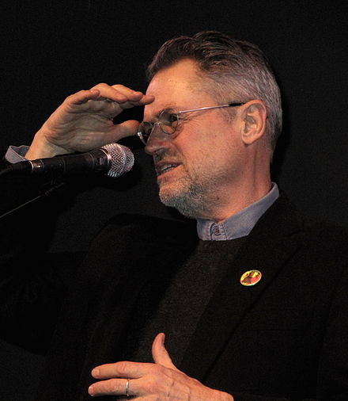

Movie on Netflix
Jonathan Demme (February 22, 1944 – April 26, 2017)
Occupation: Film director . film producer . screenwriter
Awards: Academy Award for Best Director (1992)
Jonathan Demme was born on February 22, 1944 in Baldwin, Long Island, New York, USA as Robert Jonathan Demme.
He was a director and producer, known for The Silence of the Lambs (1991), Rachel Getting Married (2008) and Philadelphia (1993).
He was married to Joanne Howard and Evelyn Purcell. He died on April 26, 2017 in Manhattan, New York City, New York.